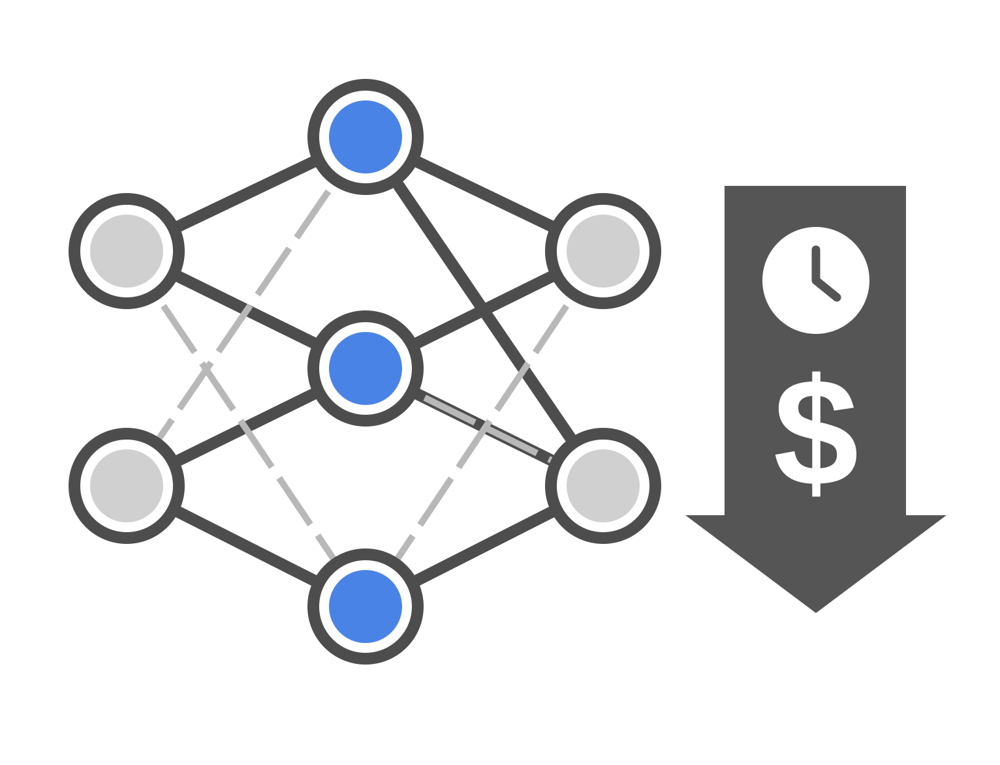
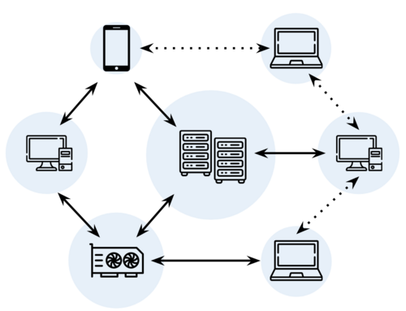

Research Focus

Model Compression As AI models become larger and more computationally demanding, compression is essential for making them practical and sustainable. We develop optimization methods that reduce training and inference costs while preserving model performance. Our work focuses on extreme compression across the AI model lifecycle.

Distributed Training The shift toward massive-scale models has made distributed training essential for workloads that no single machine can support. From an optimization perspective, the key challenge is maintaining efficiency while managing the overhead of communication between devices. Our research develops robust algorithms for decentralized and high-latency training environments.

Deep Learning Applications Optimization is not only a subject of study in itself, but also a versatile lens through which we tackle challenges in interpretability, uncertainty quantification, continual learning, and other real-world deep learning systems. Our research explores how optimization principles can be extended and applied to address such challenges.

Advanced Optimization Optimization has long been a source of crucial ideas that drastically enhance all corners of deep neural network training, and many of its most impactful questions remain open. Our research investigates these questions and develops optimization principles and algorithms for modern deep learning systems.